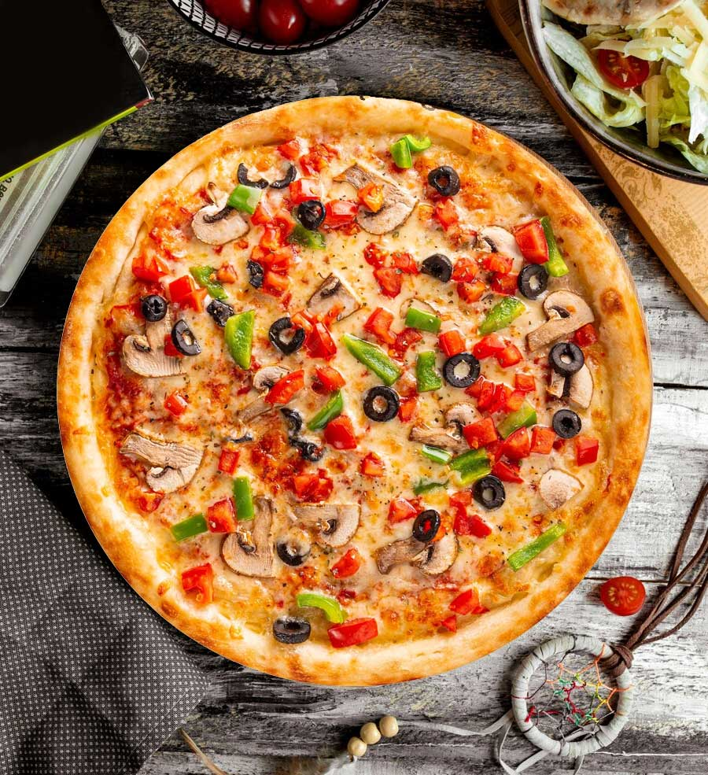

Pizza Capricciosa
Ingredients:
- Pizza dough
- Tomato sauce
- Mozzarella cheese
- Cooked ham
- Artichoke hearts (canned or marinated)
- Black olives
- Mushrooms
- Olive oil
- Salt
- Black pepper
Prepare Instructions:
- Preheat your oven to its highest setting.
- Roll out the pizza dough into a circle on a floured surface.
- Spread a layer of tomato sauce over the dough.
- Sprinkle mozzarella cheese evenly over the sauce.
- Arrange slices of cooked ham, artichoke hearts, black olives, and sliced mushrooms on top.
- Drizzle a bit of olive oil over the pizza.
- Season with a pinch of salt and freshly ground black pepper.
- Bake in the preheated oven for about 10-12 minutes, or until the crust is golden and the toppings are cooked.